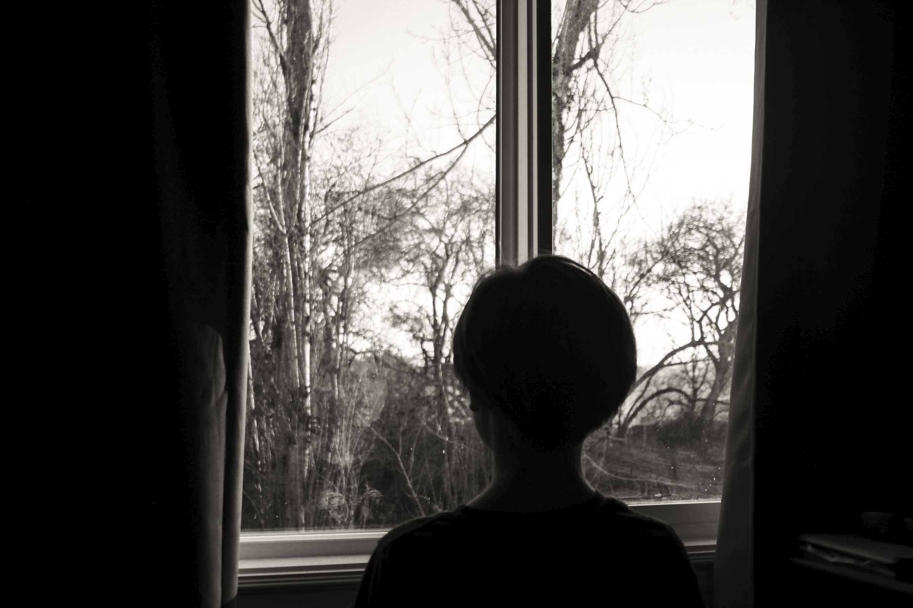

This photography project was made in 2022 and is centered around lighting techniques I experimented with. These photos were taken and edited by me to help bring out certain elements of lighting seen in different part of life.